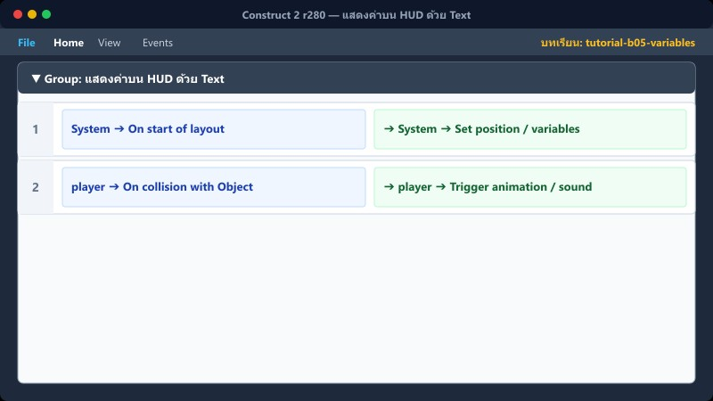

การแก้ไขตัวแปร เช่น การเก็บของแล้วได้คะแนนเพิ่ม:
1. สร้าง Event: player → On collision with another object → star
2. สร้าง Action:
- star → Destroy
- System → Add to (เลือกตัวแปร Score, Value: 10)
- Text → Set text (พิมพ์ "คะแนน : " & Score)
player ➔ On collision with star
star ➔ Destroy System ➔ Add 10 to Score Text ➔ Set text to "คะแนน : " & Score
ใช้ Set value = กำหนดค่าใหม่ทับไปเลย, Add to = บวกเพิ่ม, Subtract from = ลบออก.
📍 ที่ไหนใน C2: Action → System → Set/Add/Subtract
4
แสดงค่าบน HUD ด้วย Text

1. ไปที่เลเยอร์ HUD (คลิกที่แท็บ Layers)
2. ดับเบิลคลิก พื้นที่ว่าง → Insert Text
3. วางบนตำแหน่งที่ต้องการ เช่น มุมบนซ้าย
4. สร้าง Event อัปเดตตลอดเวลา:
- Condition: System → Every tick
- Action: Text → Set text เป็น "คะแนน : " & Score